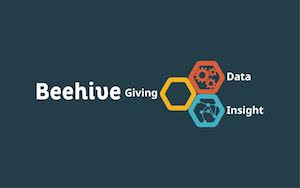

Wasting less and giving more: charities and funders unite with better data
Creator of tech-for-good venture Beehive explains how data made open by funders is helping thousands of charitable organisations to cut waste and raise funds, with tools and technologies emerging to help make the charitable sector more efficient
By Suraj Vadgama
Over 9,000 charities have found funding using data made open by over 70 charitable funds. CC BY 2.0, uploaded by [Ken Teegardin Follow](https://www.flickr.com/photos/teegardin/6093701123/in/photolist-ahtP3t-fKu9zy-q9fmo2-ahwWjs-oCzaAk-bxDf2q-ahtNwe-9VB5P2-fKcyFM-bmm9MT-2giXpK-6mYfyv-7wyH5-a2YbjP-4zmP7W-d8t7KW-bLxVx6-9VB8Lx-qi9VqQ-9duPkU-fKu9B3-bgfAgD-77iADV-fKczgt-bgftmn-bQhA4r-bgfz6X-a1MLxf-7wat7L-fKu9zW-bgfBHz-97vAy6-n7qPrA-9VDXad-bmm93i-aJ1s2V-9xrqQG-mZ3252-4pHRqV-7tyy7o-a31ZGQ-52bYaY-bmm4dt-cbDNZN-a2Ybz8-czE4Po-9VBFby-s5fcfo-8EAaRq-953fxF “Ken Teegardin Follow").
In 2015 UK foundations awarded £3.4 billion in charitable funding, and in the process generated a wealth of data about the charitable sector and its work to resolve social issues.
Unfortunately much of this information remains hidden, bespoke to each foundation, and often held in an unfriendly format.
For the past two and a half years I’ve been working with an innovative movement of funders who’ve set up 360 Giving, an open data standard for charitable funders to publish details of their giving. Using this and other open data sources I created Beehive, a family of tools and technologies that uses open data to help charitable organisations and their funders. Its aim is to help grant givers and applicants save time, prevent waste (created when a charitable organisation isn’t best-suited or eligible for a grant but applies anyway, for example), and make better decisions with more knowledge of the options they have.
The beta of the flagship site www.beehivegiving.org launched in the summer of 2015 and it’s grown to help over 9,000 charitable organisations to seek funding using data from over 70 charitable funds.
How it works
For charitable organisations seeking funding, there’s a simple three-step process. Once they create an account at beehivegiving.org they must answer two short series of questions about their organisation, such as where it is based, the type and location of its beneficiaries, its annual income and the type of support it needs. Then Beehive identifies suitable funders and specific funds through a process of modular data sorting and matching, and presents this back to the user in a clear list of top recommendations. Charitable organisations can add more detail for better-tailored responses by giving a short summary of their proposed work and intended outcomes. They can also choose to make this information public for funders to see.
For funders, a dedicated dashboard shows matched charities and breaks down the open grants data from 360 Giving and other sources into useful nuggets of information. It gives an at-a-glance view of funding trends, and shows each grantmaker their place in the wider funding sector and how they could be more effective and targeted. For example, the dashboard helps funders avoid replication of the same services in a particular area by highlighting those areas and charitable organisations that are being funded by multiple grantmakers. It also shows whether a charity similar to the one applying has been previously funded, either by the enquiring funder or another. Data visualisations illustrate how funding is balanced across regions and themes, and if there are any ‘cold spots’ where funders might step in.
By openly publishing details of their giving, charitable funders are hugely benefiting the charities they seek to support. Indeed, the pooling of data about charitable funding in a consistent way give an unprecedented opportunity to contribute to a resource with societal value in its own right. Contributing to a consistent, open record of philanthropy that guides our charitable efforts should be the duty of every conscientious funder.
More efficient future funding
More and more funders are beginning to understand this, with influential funders such as the Big Lottery Fund supporting open data in the charitable sector. Beehive has shown how open data can help charities to stay relevant and attractive to potential funders. With more funders publishing open data and joining the 360 Giving movement, we plan to double Beehive’s reach to serve thousands more charitable organisations and improve our technology to help make a more efficient charitable sector.

Suraj Vadgama is the creator of Beehive. Follow @suninthasky on Twitter and get in touch at [email protected]
If you have ideas or experience in open data that you'd like to share, pitch us a blog or tweet us at @ODIHQ.